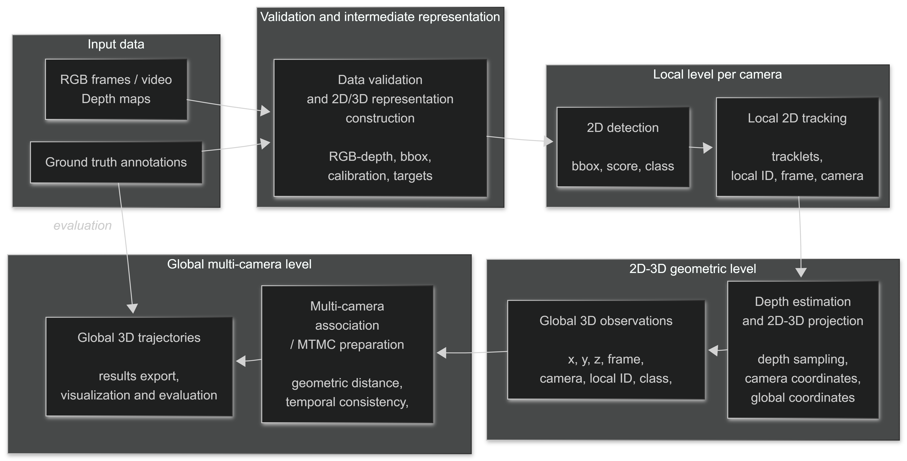

Fragmented observations
Objects become occluded, change scale and perspective, leave one camera, and later appear in another. A frame-level detector alone cannot explain that continuity.
Bachelor thesis · Grade 9.9 / 10
An end-to-end Computer Vision system that turns synchronized camera streams into consistent global identities and metric-space trajectories.
Overview
Objects become occluded, change scale and perspective, leave one camera, and later appear in another. A frame-level detector alone cannot explain that continuity.
The system combines detection, local tracking, calibrated geometry, tracklet construction, global association, pruning, and export instead of treating each component in isolation.
The final configuration improves detection, association, and localization metrics over the frozen baseline and packages the result as a documented reproduction repository.
Architecture
Select a stage to understand its role in the final system. The full repository contains the frozen configurations and public command-line entry points.
YOLO11m is fine-tuned on the target warehouse classes. The final detector improves recall and provides the observations used by every downstream stage.

Validated results
Results are reported on the project validation split. The public repository contains aggregate, per-scene, per-class, and geometry-specific tables.
All bars share a 0.00–0.40 scale. Use the table for exact values.
| Variant | HOTA | DetA | AssA | LocA |
|---|---|---|---|---|
| V8 baseline | 0.1305 | 0.2492 | 0.0683 | 0.3897 |
| Final pipeline | 0.1463 | 0.2648 | 0.0808 | 0.3914 |
Match@2m rises from 39.2% to 74.6% with the selected ground-contact approach.
The all-class detector balances strong precision with the recall required by downstream tracking.
The final pipeline recovers substantially more true positives, while also introducing more false positives—an explicit remaining optimization target.
Demonstrator
The preview is loaded only when requested so the page stays fast and motion never starts without user intent.
Loads the official animated demonstrator from the public thesis repository. You can stop the animation at any time.
Engineering decisions
The public repository keeps the canonical pipeline and supporting evaluation code while excluding exploratory versions.
Datasets, checkpoints, caches, and generated outputs remain outside version control and are documented as local dependencies.
Diagnostic cuboids are not the critical output, and the coordinate-space BEV is not presented as a map-aligned reconstruction.
Commands, frozen configurations, detailed metrics, architecture, and the demonstrator connect claims to evidence.
Continue exploring